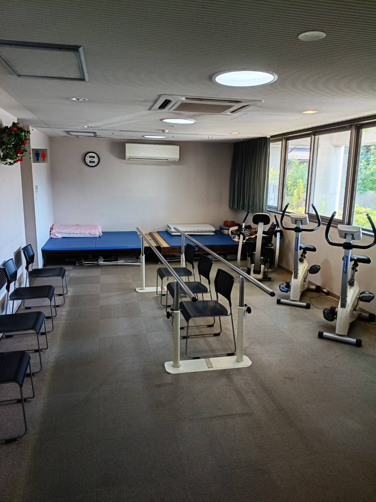

ひのきの大浴場
自宅での入浴や風呂掃除が難しい方も、銭湯へ行くような気分転換を兼ねて入浴できます。
二口店は、ひのきの大浴場での入浴を中心に、予防程度の無理のない体操を組み合わせる事業所です。自宅での入浴や風呂掃除が難しい方、要支援で入浴を希望する方もご相談ください。
二口店の入力表から月〜土の空きを読み込みます。表示できない場合や紹介時の最終確認は、電話でお願いします。
| 曜日 | 施設の空き | お風呂の空き |
|---|
書類で確認できた区分と条件です。個別の受け入れ可否は、心身の状態とケアプランを確認して決定します。
| 確認項目 | 書類上の状況 | 補足 |
|---|---|---|
| 入浴 | 対応あり | ひのきの大浴場です。要支援の方も、希望日とお風呂の空きを確認します。 |
| 送迎 | 対応あり | 原則、ご自宅と事業所の間です。 |
| 機能訓練 | 対応あり | 身体機能の維持を目的に、予防程度の無理のない体操を継続します。 |
| 専用機材 | 少なめ | ボディケアや運動機材を中心に希望する場合は、サービス内容が合うか事前にご相談ください。 |
| 常時の個別付き添い | 対応不可 | 営業時間を通じて常に職員がそばに付き添う対応はできません。 |
| 利用中の外出 | 原則不可 | 緊急時を除き、営業時間内の外出はできません。 |
安心・安全な入浴による清潔保持と、無理のない体操による身体機能の維持を組み合わせます。
自宅での入浴や風呂掃除が難しい方も、銭湯へ行くような気分転換を兼ねて入浴できます。
職員が体調を確認し、安全に入浴できるよう支援します。施設とお風呂の空きは別々に確認できます。
身体機能を維持し、在宅生活を続けられるよう、無理のない体操を継続します。



※顔が写る写真は確認用の仮配置です。公開前に必要な加工と掲載確認を行います。
2026年6月版の通所・予防・緩和型の重要事項説明書に基づく概算です。通所介護は通常の提供時間に合わせて5〜6時間を選択済みです。
事業所番号：1770102802。紹介・請求時の照合用です。
| 区分 | 内容 | サービスコード |
|---|---|---|
| 通所介護 | 3〜4時間／4〜5時間／5〜6時間／6〜7時間、各要介護1〜5 | 15 2241〜2245／15 2246〜2250／15 2341〜2345／15 2346〜2350 |
| 介護予防型 | 週1回程度／週2回程度 | A6 1111／A6 1121 |
| 基準緩和型 | 週1回程度／週2回程度 | A6 1211／A6 1221 |
| 主な加算・減算 | 入浴介助加算Ⅰ／個別機能訓練加算Ⅱ／科学的介護推進体制加算／ADL維持等加算Ⅱ／送迎減算 | 15 5301／15 5052／15 6361／15 6339／15 5612 |
根拠：厚生労働省の介護サービスコード表、金沢市総合事業サービスコード表（令和8年6月1日以降）。実際の算定は個別のケアプランと算定状況によります。
| 事業所名 | プラトーケアセンターシルバーフィットネス二口店 |
|---|---|
| 事業所番号 | 1770102802 |
| サービス | 通所介護・介護予防型通所サービス・基準緩和型通所サービス |
| 営業日 | 月曜日〜土曜日 |
| 営業時間 | 8:00〜17:00 |
| 提供時間 | 9:30〜14:30 |
| 休み | 日曜日、事業所が定めた祝日、8月14〜16日、12月31日〜1月3日 |
| 通常の実施地域 | 金沢市 |
| 所在地 | 石川県金沢市二口町ハ28番地1 |
| 電話 | 076-231-2009 |
| FAX | 076-231-2049 |
出典：2026年6月版 通所介護・介護予防型・基準緩和型の重要事項説明書・契約書
利用区分と希望曜日をお伝えください。